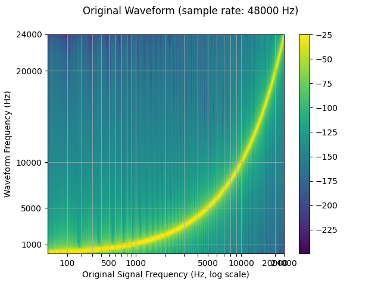
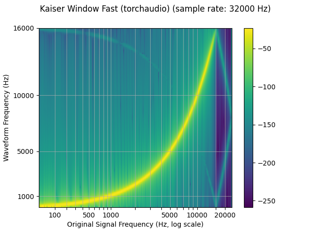

Note
Click here to download the full example code
Audio Resampling¶
Here, we will walk through resampling audio waveforms using torchaudio.
# When running this tutorial in Google Colab, install the required packages
# with the following.
# !pip install torchaudio librosa
import torch
import torchaudio
import torchaudio.functional as F
import torchaudio.transforms as T
print(torch.__version__)
print(torchaudio.__version__)
Out:
1.12.0.dev20220315+cpu
0.12.0.dev20220315+cpu
Preparing data and utility functions (skip this section)¶
# @title Prepare data and utility functions. {display-mode: "form"}
# @markdown
# @markdown You do not need to look into this cell.
# @markdown Just execute once and you are good to go.
# -------------------------------------------------------------------------------
# Preparation of data and helper functions.
# -------------------------------------------------------------------------------
import math
import time
import librosa
import matplotlib.pyplot as plt
import pandas as pd
from IPython.display import Audio, display
DEFAULT_OFFSET = 201
SWEEP_MAX_SAMPLE_RATE = 48000
DEFAULT_LOWPASS_FILTER_WIDTH = 6
DEFAULT_ROLLOFF = 0.99
DEFAULT_RESAMPLING_METHOD = "sinc_interpolation"
def _get_log_freq(sample_rate, max_sweep_rate, offset):
"""Get freqs evenly spaced out in log-scale, between [0, max_sweep_rate // 2]
offset is used to avoid negative infinity `log(offset + x)`.
"""
start, stop = math.log(offset), math.log(offset + max_sweep_rate // 2)
return torch.exp(torch.linspace(start, stop, sample_rate, dtype=torch.double)) - offset
def _get_inverse_log_freq(freq, sample_rate, offset):
"""Find the time where the given frequency is given by _get_log_freq"""
half = sample_rate // 2
return sample_rate * (math.log(1 + freq / offset) / math.log(1 + half / offset))
def _get_freq_ticks(sample_rate, offset, f_max):
# Given the original sample rate used for generating the sweep,
# find the x-axis value where the log-scale major frequency values fall in
time, freq = [], []
for exp in range(2, 5):
for v in range(1, 10):
f = v * 10 ** exp
if f < sample_rate // 2:
t = _get_inverse_log_freq(f, sample_rate, offset) / sample_rate
time.append(t)
freq.append(f)
t_max = _get_inverse_log_freq(f_max, sample_rate, offset) / sample_rate
time.append(t_max)
freq.append(f_max)
return time, freq
def get_sine_sweep(sample_rate, offset=DEFAULT_OFFSET):
max_sweep_rate = sample_rate
freq = _get_log_freq(sample_rate, max_sweep_rate, offset)
delta = 2 * math.pi * freq / sample_rate
cummulative = torch.cumsum(delta, dim=0)
signal = torch.sin(cummulative).unsqueeze(dim=0)
return signal
def plot_sweep(
waveform,
sample_rate,
title,
max_sweep_rate=SWEEP_MAX_SAMPLE_RATE,
offset=DEFAULT_OFFSET,
):
x_ticks = [100, 500, 1000, 5000, 10000, 20000, max_sweep_rate // 2]
y_ticks = [1000, 5000, 10000, 20000, sample_rate // 2]
time, freq = _get_freq_ticks(max_sweep_rate, offset, sample_rate // 2)
freq_x = [f if f in x_ticks and f <= max_sweep_rate // 2 else None for f in freq]
freq_y = [f for f in freq if f >= 1000 and f in y_ticks and f <= sample_rate // 2]
figure, axis = plt.subplots(1, 1)
axis.specgram(waveform[0].numpy(), Fs=sample_rate)
plt.xticks(time, freq_x)
plt.yticks(freq_y, freq_y)
axis.set_xlabel("Original Signal Frequency (Hz, log scale)")
axis.set_ylabel("Waveform Frequency (Hz)")
axis.xaxis.grid(True, alpha=0.67)
axis.yaxis.grid(True, alpha=0.67)
figure.suptitle(f"{title} (sample rate: {sample_rate} Hz)")
plt.show(block=True)
def play_audio(waveform, sample_rate):
waveform = waveform.numpy()
num_channels, num_frames = waveform.shape
if num_channels == 1:
display(Audio(waveform[0], rate=sample_rate))
elif num_channels == 2:
display(Audio((waveform[0], waveform[1]), rate=sample_rate))
else:
raise ValueError("Waveform with more than 2 channels are not supported.")
def plot_specgram(waveform, sample_rate, title="Spectrogram", xlim=None):
waveform = waveform.numpy()
num_channels, num_frames = waveform.shape
figure, axes = plt.subplots(num_channels, 1)
if num_channels == 1:
axes = [axes]
for c in range(num_channels):
axes[c].specgram(waveform[c], Fs=sample_rate)
if num_channels > 1:
axes[c].set_ylabel(f"Channel {c+1}")
if xlim:
axes[c].set_xlim(xlim)
figure.suptitle(title)
plt.show(block=False)
def benchmark_resample(
method,
waveform,
sample_rate,
resample_rate,
lowpass_filter_width=DEFAULT_LOWPASS_FILTER_WIDTH,
rolloff=DEFAULT_ROLLOFF,
resampling_method=DEFAULT_RESAMPLING_METHOD,
beta=None,
librosa_type=None,
iters=5,
):
if method == "functional":
begin = time.time()
for _ in range(iters):
F.resample(
waveform,
sample_rate,
resample_rate,
lowpass_filter_width=lowpass_filter_width,
rolloff=rolloff,
resampling_method=resampling_method,
)
elapsed = time.time() - begin
return elapsed / iters
elif method == "transforms":
resampler = T.Resample(
sample_rate,
resample_rate,
lowpass_filter_width=lowpass_filter_width,
rolloff=rolloff,
resampling_method=resampling_method,
dtype=waveform.dtype,
)
begin = time.time()
for _ in range(iters):
resampler(waveform)
elapsed = time.time() - begin
return elapsed / iters
elif method == "librosa":
waveform_np = waveform.squeeze().numpy()
begin = time.time()
for _ in range(iters):
librosa.resample(waveform_np, orig_sr=sample_rate, target_sr=resample_rate, res_type=librosa_type)
elapsed = time.time() - begin
return elapsed / iters
Resampling Overview¶
To resample an audio waveform from one freqeuncy to another, you can use
torchaudio.transforms.Resample() or
torchaudio.functional.resample().
transforms.Resample precomputes and caches the kernel used for resampling,
while functional.resample computes it on the fly, so using
torchaudio.transforms.Resample will result in a speedup when resampling
multiple waveforms using the same parameters (see Benchmarking section).
Both resampling methods use bandlimited sinc
interpolation to compute
signal values at arbitrary time steps. The implementation involves
convolution, so we can take advantage of GPU / multithreading for
performance improvements. When using resampling in multiple
subprocesses, such as data loading with multiple worker processes, your
application might create more threads than your system can handle
efficiently. Setting torch.set_num_threads(1) might help in this
case.
Because a finite number of samples can only represent a finite number of frequencies, resampling does not produce perfect results, and a variety of parameters can be used to control for its quality and computational speed. We demonstrate these properties through resampling a logarithmic sine sweep, which is a sine wave that increases exponentially in frequency over time.
The spectrograms below show the frequency representation of the signal, where the x-axis corresponds to the frequency of the original waveform (in log scale), y-axis the frequency of the plotted waveform, and color intensity the amplitude.
sample_rate = 48000
resample_rate = 32000
waveform = get_sine_sweep(sample_rate)
plot_sweep(waveform, sample_rate, title="Original Waveform")
play_audio(waveform, sample_rate)
resampler = T.Resample(sample_rate, resample_rate, dtype=waveform.dtype)
resampled_waveform = resampler(waveform)
plot_sweep(resampled_waveform, resample_rate, title="Resampled Waveform")
play_audio(waveform, sample_rate)
- 
Out:
<IPython.lib.display.Audio object>
<IPython.lib.display.Audio object>
Controling resampling quality with parameters¶
Lowpass filter width¶
Because the filter used for interpolation extends infinitely, the
lowpass_filter_width parameter is used to control for the width of
the filter to use to window the interpolation. It is also referred to as
the number of zero crossings, since the interpolation passes through
zero at every time unit. Using a larger lowpass_filter_width
provides a sharper, more precise filter, but is more computationally
expensive.
sample_rate = 48000
resample_rate = 32000
resampled_waveform = F.resample(waveform, sample_rate, resample_rate, lowpass_filter_width=6)
plot_sweep(resampled_waveform, resample_rate, title="lowpass_filter_width=6")
resampled_waveform = F.resample(waveform, sample_rate, resample_rate, lowpass_filter_width=128)
plot_sweep(resampled_waveform, resample_rate, title="lowpass_filter_width=128")
Rolloff¶
The rolloff parameter is represented as a fraction of the Nyquist
frequency, which is the maximal frequency representable by a given
finite sample rate. rolloff determines the lowpass filter cutoff and
controls the degree of aliasing, which takes place when frequencies
higher than the Nyquist are mapped to lower frequencies. A lower rolloff
will therefore reduce the amount of aliasing, but it will also reduce
some of the higher frequencies.
sample_rate = 48000
resample_rate = 32000
resampled_waveform = F.resample(waveform, sample_rate, resample_rate, rolloff=0.99)
plot_sweep(resampled_waveform, resample_rate, title="rolloff=0.99")
resampled_waveform = F.resample(waveform, sample_rate, resample_rate, rolloff=0.8)
plot_sweep(resampled_waveform, resample_rate, title="rolloff=0.8")
Window function¶
By default, torchaudio’s resample uses the Hann window filter, which is
a weighted cosine function. It additionally supports the Kaiser window,
which is a near optimal window function that contains an additional
beta parameter that allows for the design of the smoothness of the
filter and width of impulse. This can be controlled using the
resampling_method parameter.
sample_rate = 48000
resample_rate = 32000
resampled_waveform = F.resample(waveform, sample_rate, resample_rate, resampling_method="sinc_interpolation")
plot_sweep(resampled_waveform, resample_rate, title="Hann Window Default")
resampled_waveform = F.resample(waveform, sample_rate, resample_rate, resampling_method="kaiser_window")
plot_sweep(resampled_waveform, resample_rate, title="Kaiser Window Default")
Comparison against librosa¶
torchaudio’s resample function can be used to produce results similar to
that of librosa (resampy)’s kaiser window resampling, with some noise
sample_rate = 48000
resample_rate = 32000
# kaiser_best
resampled_waveform = F.resample(
waveform,
sample_rate,
resample_rate,
lowpass_filter_width=64,
rolloff=0.9475937167399596,
resampling_method="kaiser_window",
beta=14.769656459379492,
)
plot_sweep(resampled_waveform, resample_rate, title="Kaiser Window Best (torchaudio)")
librosa_resampled_waveform = torch.from_numpy(
librosa.resample(waveform.squeeze().numpy(), orig_sr=sample_rate, target_sr=resample_rate, res_type="kaiser_best")
).unsqueeze(0)
plot_sweep(librosa_resampled_waveform, resample_rate, title="Kaiser Window Best (librosa)")
mse = torch.square(resampled_waveform - librosa_resampled_waveform).mean().item()
print("torchaudio and librosa kaiser best MSE:", mse)
# kaiser_fast
resampled_waveform = F.resample(
waveform,
sample_rate,
resample_rate,
lowpass_filter_width=16,
rolloff=0.85,
resampling_method="kaiser_window",
beta=8.555504641634386,
)
plot_specgram(resampled_waveform, resample_rate, title="Kaiser Window Fast (torchaudio)")
librosa_resampled_waveform = torch.from_numpy(
librosa.resample(waveform.squeeze().numpy(), orig_sr=sample_rate, target_sr=resample_rate, res_type="kaiser_fast")
).unsqueeze(0)
plot_sweep(librosa_resampled_waveform, resample_rate, title="Kaiser Window Fast (librosa)")
mse = torch.square(resampled_waveform - librosa_resampled_waveform).mean().item()
print("torchaudio and librosa kaiser fast MSE:", mse)
- 
Out:
torchaudio and librosa kaiser best MSE: 2.0806901153659873e-06
torchaudio and librosa kaiser fast MSE: 2.5200744248601027e-05
Performance Benchmarking¶
Below are benchmarks for downsampling and upsampling waveforms between
two pairs of sampling rates. We demonstrate the performance implications
that the lowpass_filter_wdith, window type, and sample rates can
have. Additionally, we provide a comparison against librosa’s
kaiser_best and kaiser_fast using their corresponding parameters
in torchaudio.
To elaborate on the results:
a larger
lowpass_filter_widthresults in a larger resampling kernel, and therefore increases computation time for both the kernel computation and convolutionusing
kaiser_windowresults in longer computation times than the defaultsinc_interpolationbecause it is more complex to compute the intermediate window values - a large GCD between the sample and resample rate will result in a simplification that allows for a smaller kernel and faster kernel computation.
configs = {
"downsample (48 -> 44.1 kHz)": [48000, 44100],
"downsample (16 -> 8 kHz)": [16000, 8000],
"upsample (44.1 -> 48 kHz)": [44100, 48000],
"upsample (8 -> 16 kHz)": [8000, 16000],
}
for label in configs:
times, rows = [], []
sample_rate = configs[label][0]
resample_rate = configs[label][1]
waveform = get_sine_sweep(sample_rate)
# sinc 64 zero-crossings
f_time = benchmark_resample("functional", waveform, sample_rate, resample_rate, lowpass_filter_width=64)
t_time = benchmark_resample("transforms", waveform, sample_rate, resample_rate, lowpass_filter_width=64)
times.append([None, 1000 * f_time, 1000 * t_time])
rows.append("sinc (width 64)")
# sinc 6 zero-crossings
f_time = benchmark_resample("functional", waveform, sample_rate, resample_rate, lowpass_filter_width=16)
t_time = benchmark_resample("transforms", waveform, sample_rate, resample_rate, lowpass_filter_width=16)
times.append([None, 1000 * f_time, 1000 * t_time])
rows.append("sinc (width 16)")
# kaiser best
lib_time = benchmark_resample("librosa", waveform, sample_rate, resample_rate, librosa_type="kaiser_best")
f_time = benchmark_resample(
"functional",
waveform,
sample_rate,
resample_rate,
lowpass_filter_width=64,
rolloff=0.9475937167399596,
resampling_method="kaiser_window",
beta=14.769656459379492,
)
t_time = benchmark_resample(
"transforms",
waveform,
sample_rate,
resample_rate,
lowpass_filter_width=64,
rolloff=0.9475937167399596,
resampling_method="kaiser_window",
beta=14.769656459379492,
)
times.append([1000 * lib_time, 1000 * f_time, 1000 * t_time])
rows.append("kaiser_best")
# kaiser fast
lib_time = benchmark_resample("librosa", waveform, sample_rate, resample_rate, librosa_type="kaiser_fast")
f_time = benchmark_resample(
"functional",
waveform,
sample_rate,
resample_rate,
lowpass_filter_width=16,
rolloff=0.85,
resampling_method="kaiser_window",
beta=8.555504641634386,
)
t_time = benchmark_resample(
"transforms",
waveform,
sample_rate,
resample_rate,
lowpass_filter_width=16,
rolloff=0.85,
resampling_method="kaiser_window",
beta=8.555504641634386,
)
times.append([1000 * lib_time, 1000 * f_time, 1000 * t_time])
rows.append("kaiser_fast")
df = pd.DataFrame(times, columns=["librosa", "functional", "transforms"], index=rows)
df.columns = pd.MultiIndex.from_product([[f"{label} time (ms)"], df.columns])
display(df.round(2))
Out:
downsample (48 -> 44.1 kHz) time (ms) ...
librosa ... transforms
sinc (width 64) NaN ... 0.35
sinc (width 16) NaN ... 0.31
kaiser_best 31.60 ... 0.35
kaiser_fast 9.45 ... 0.32
[4 rows x 3 columns]
downsample (16 -> 8 kHz) time (ms) ...
librosa ... transforms
sinc (width 64) NaN ... 0.74
sinc (width 16) NaN ... 0.35
kaiser_best 11.94 ... 0.82
kaiser_fast 4.33 ... 0.40
[4 rows x 3 columns]
upsample (44.1 -> 48 kHz) time (ms) ...
librosa ... transforms
sinc (width 64) NaN ... 0.36
sinc (width 16) NaN ... 0.34
kaiser_best 31.72 ... 0.40
kaiser_fast 9.63 ... 0.36
[4 rows x 3 columns]
upsample (8 -> 16 kHz) time (ms) ...
librosa ... transforms
sinc (width 64) NaN ... 0.33
sinc (width 16) NaN ... 0.19
kaiser_best 12.14 ... 0.33
kaiser_fast 4.42 ... 0.19
[4 rows x 3 columns]
Total running time of the script: ( 0 minutes 4.227 seconds)